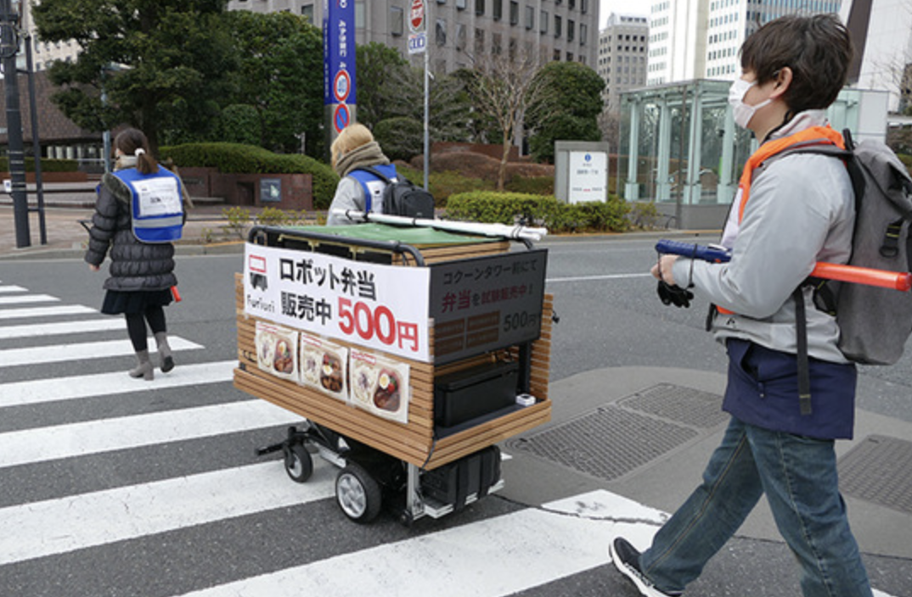
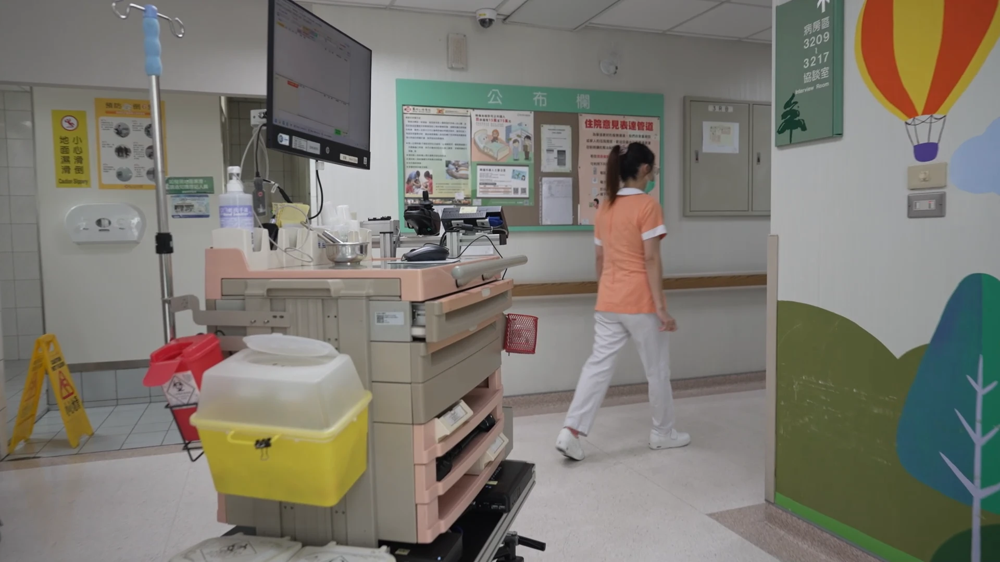

產業實地實證案例
MBR 解決方案專注於真實場域中的挑戰，實現高效且低工傷風險的營運目標。

農業採收
溫室採收輔助
MBR 人機跟隨功能，農友專注採收，機器人自動運載。有效減少 60% 體力負荷。
#減輕搬運 #降低工傷
流通配送
倉儲中心配送
搭載「循線導航」。自動往返入庫區。支持 300kg 籠車，減少每日 10km 步行。
#物流動線 #高效搬運
零售百貨
西新宿便當販售
Furiuri 計畫實績。木質外殼與 LED 看板，新宿街頭自動跟隨巡迴。
#品牌形象 #自動跟隨
醫療物流
院內物資感控配送
支援無障礙坡道，實現零接觸運送，大幅提升院內感控等級。
#感控配送 #坡道支援